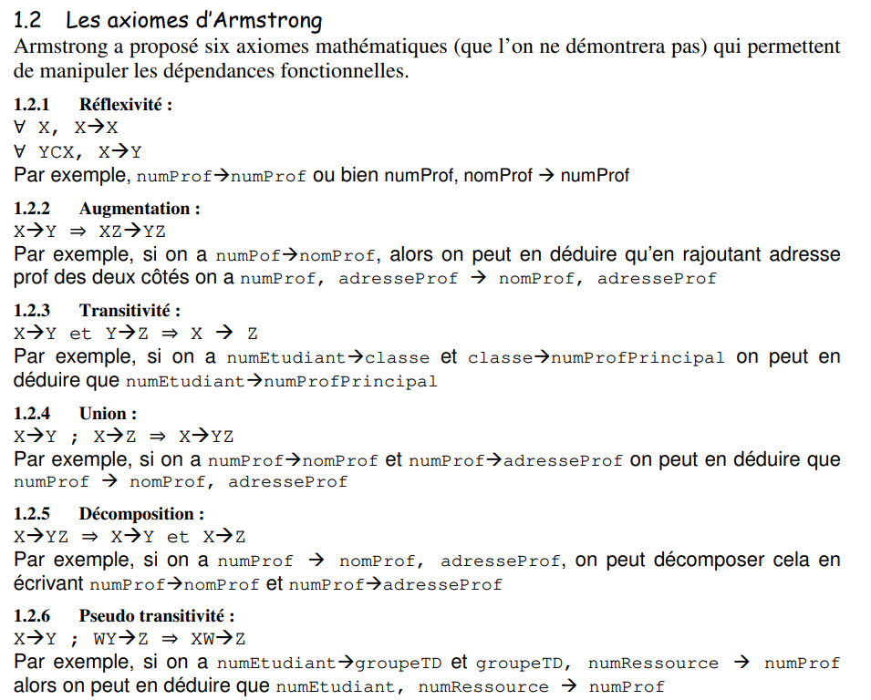
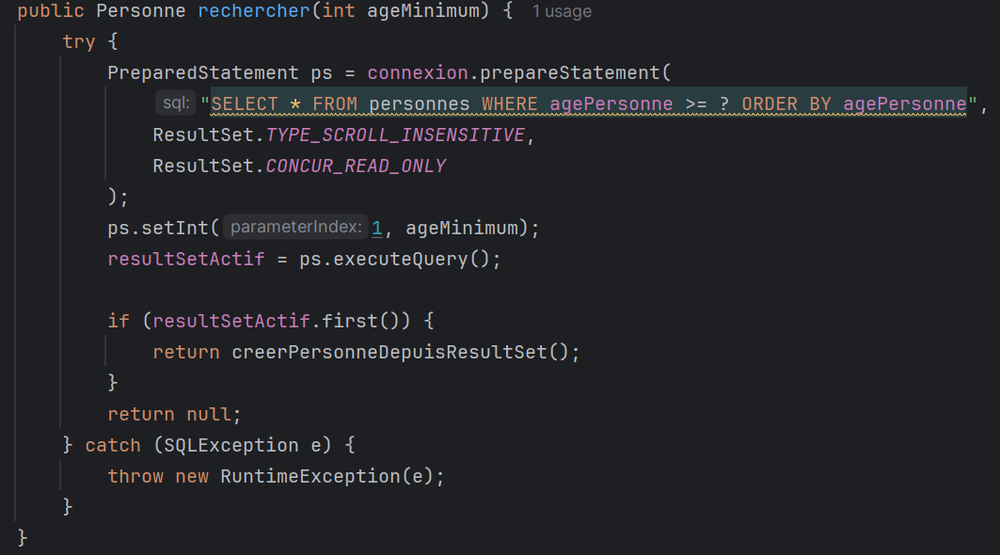
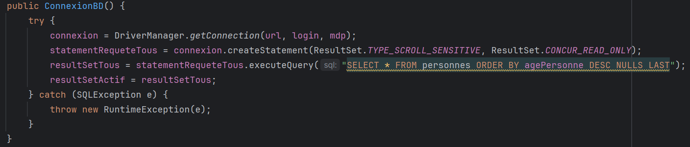

Portfolio d'apprentissage
Cette page rassemble des travaux réalisés dans un cadre strictement académique pour justifier l'acquisition des apprentissages critiques (AC) et des composantes essentielles (CE) de chaque compétence. Les preuves peuvent être de nature variée: TD, TP et SAE.
Cette section regroupe des preuves d'apprentissage produites pendant ma formation en BUT Informatique. L'objectif n'est pas de présenter uniquement des projets finis, mais de montrer des éléments académiques pertinents (TD, TP, SAE) qui justifient concrètement la progression et la validation des compétences via les AC et CE.
Sélection de preuves académiques (TD, TP, SAE) pour justifier l'acquisition des AC/CE
Présentation orientée réalisations/projets, avec vision plus "produit" et demonstration globale
Nous avions pour objectif de réaliser un réseau avec différentes machines virtuelles pouvant communiquer entre elles. Il y a 5 machines au total dont 2 servant de "client" (une VM Windows et une VM Linux), 2 servant de "serveur" (avec différents serveurs installés dessus) et une VM servant de "routeur" pour permettre aux autres d'accéder à internet.
Durée
1 à 2 semaines
Équipe
Travail de groupe - 3 personnes
Contraintes
Installation sur la même machine
Je me suis occupé d'installer et de configurer l'intégralité des machines virtuelles sur mon pc portable de l'IUT. Concrètement j'ai :
Ce TD m'a surtout permis de mobiliser l'AC2, car j'ai installé et configuré plusieurs machines virtuelles ainsi que des services réseau virtualisés dans une même architecture : routeur, clients, serveur web, base de données et dossier partagé. J'ai aussi mobilisé l'AC3 en mettant en place une infrastructure réseau fonctionnelle et plus fiable grâce au routage, au NAT et à la persistance de certaines configurations. Enfin, l'AC1 a été mobilisé de façon plus partielle, puisque les services déployés permettaient la communication entre les machines et les applications. Cette expérience m'a également permis de travailler les composantes essentielles CE2, CE3 et CE4, en appliquant une architecture cohérente, en vérifiant le bon fonctionnement des services et en assurant leur robustesse dans le temps.
Durant mes cours de SQL et Normalisation aux semestres 3 et 4, j'ai pu approfondir mes connaissances en SQL, notamment en l'utilisant avec un langage de programmation (Java), en étudiant l'optimisation des requêtes et la normalisation des schémas relationnels.
Durée
2 semestres (S3/S4)
Équipe
Seul
Contraintes
Aucune (travaux de TD)
J'ai réalisé divers exercices et TDs en SQL au semestre 3, puis poursuivi au semestre 4 avec la normalisation. Concrètement, j'ai :
Ce travail m'a surtout permis de mobiliser l'AC1, à travers l'optimisation des requêtes SQL et la normalisation des schémas relationnels. J'ai également mobilisé l'AC3 en utilisant JDBC pour relier une application Java à une base de données et restituer les résultats d'une recherche par mot-clé. Cette activité m'a permis de travailler les composantes essentielles CE3 et CE4 : CE3 grâce à l'utilisation des axiomes d'Armstrong et du raisonnement sur les dépendances fonctionnelles, et CE4 en améliorant la cohérence et la qualité du modèle relationnel ainsi que des données manipulées.



Durant mes cours de Management SI, j'ai pu apprendre ce qu'était un Système d'Information, son importance, sa place dans une entreprise et sa forme. J'ai travaillé sur différents TDs et approfondi mes connaissances et compétences dans la matière.
Durée
1 semestre (S4)
Équipe
Seul
Contraintes
Aucune (travaux de TD)
J'ai réalisé plusieurs TD de Management SI. Concrètement, j'ai :
Ce travail m'a surtout permis de mobiliser l'AC1, en identifiant les processus présents dans une organisation afin de repérer les limites du système d'information et proposer des améliorations. J'ai également mobilisé l'AC2 et l'AC3, en analysant les besoins des utilisateurs et en évaluant la faisabilité de plusieurs évolutions du SI, comme la modernisation des outils, la rationalisation de l'organisation informatique ou le déploiement d'applications plus adaptées. L'AC4 a été abordé de façon plus partielle, à travers la réflexion sur le pilotage du SI, le schéma directeur et le suivi par indicateurs. Cette activité m'a surtout permis de travailler les composantes essentielles CE1 et CE4, en menant une analyse claire, structurée et critique, mais aussi CE2 et CE3 en prenant en compte les contraintes réglementaires, organisationnelles et éthiques liées au système d'information.
Il n'y a pas de traces numériques à joindre pour ce travail, car il a principalement été réalisé sur papier et à l'oral.
Cette SAE consistait à développer, en équipe, une application web répondant à un besoin client en suivant une démarche itérative de type Agile Scrum. Le projet portait sur une plateforme permettant de rédiger des propositions et des questions, de gérer différentes phases de vote et d'ajouter progressivement de nouvelles fonctionnalités comme l'authentification, la gestion des rôles, les sections, la recherche par thème, l'accessibilité et plusieurs méthodes de vote, dont le vote australien et le vote majoritaire.
Durée
3 à 4 mois
Équipe
Groupe - 4 personnes
Contraintes
Rendu de sprint toutes les 3 semaines
Dans cette SAE du semestre 3, j'ai travaillé en équipe sur un projet mené avec une démarche Agile Scrum. Concrètement, j'ai :
Cette SAE m'a surtout permis de mobiliser l'AC2, car nous avons dû formaliser les besoins du client à travers les user stories et ajuster certains éléments lorsque les attentes n'étaient pas encore assez claires. J'ai aussi mobilisé l'AC3 en réfléchissant à la faisabilité des fonctionnalités prévues selon le temps, les priorités et la charge de travail du sprint. Enfin, l'AC4 a été fortement travaillé grâce à la mise en place d'un vrai suivi de projet avec backlog, réunions, rétrospectives, estimations en points et indicateurs comme les diagrammes de burndown, burnup et de vélocité. Cette expérience m'a principalement permis de travailler les composantes essentielles CE1 et CE4, en communiquant avec les différents acteurs du projet et en adoptant une démarche proactive et critique pour améliorer notre organisation au fil des sprints.
Il n'y a pas d'autres traces à disposition pour ce travail. Le document principal sera disponible via le PDF ci-dessous.
Télécharger le PDF saeS3.pdf